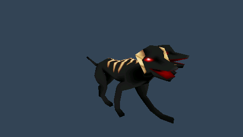
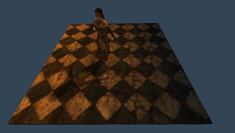
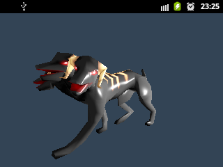

Overview
Screenshots
Playstation Portable
 
Android

Features
Platform Support
- Playstation Portable
- Android
- Windows
Audio
- channel management
- buffered and streamed playback
- 3d sound (built-in software implementation wich works with all devices/drivers that support at least stereo output, linear clamped roll-off)
- File Format Support
- RIFF WAVE (*.wav)
- Ogg Vorbis (*.ogg)
- real-time dsp system
Graphics
- Materials
- C-like syntax material description language that exposes common fixed function operations with support for multi-pass rendering
- Shader parameters can be modified in the application using a simple highlevel interface
- Animation
- Skeletal animation with support for weighted blending of multiple animations
- Morph animation (linear blends between shape snapshots)
- Texture-based shadows
Tools
- Blender Add-on
- Export to ChrisslyEngine-Mesh (.mesh), ChrisslyEngine-Texture (.tex), ChrisslyEngine-Materialdescription (.material) and ChrisslyEngine-Skeleton (.skeleton) directly from Blender
- Command line tools
- meshtool: Converts Wavefront-ASCII-OBJ (.obj) to ChrisslyEngine-Mesh (.mesh), creating a morphanimation from a series of (*.obj) files is also supported
- texturetool: Adds ChrisslyEngine texture header to raw texture data